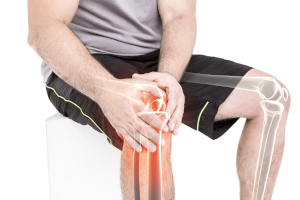

स्थानांतरित करने के लिए आराम वापस आ गया है
जोड़ों और रीढ़ की हड्डी के दर्द के युग को अलविदा!
एक भारतीय प्रोफेसर का अग्रणी उपचार दर्द
से तुरंत राहत देता है और गारंटी देता है 28 दिनों में 100% स्वस्थ जोड़ और रीढ़

क्या नए उपचार से जोड़ों के दर्द के लिए दर्द निवारक गोलियां, मलहम और क्रीम बनाने वाली कंपनियों
का कारोबार खत्म हो जाएगा? रुमेटोलॉजी, न्यूरोलॉजी और फिजियोथेरेपी के सबसे प्रतिष्ठित विशेषज्ञों
को इसमें कोई संदेह नहीं है कि ऐसा ही होगा। एक भारतीय द्वारा विकसित प्राकृतिक मैक्रोमोलेक्यूलर
फॉर्मूला के लिए धन्यवाद, स्वस्थ जोड़ों और रीढ़ की लड़ाई में लंबे समय से प्रतीक्षित सफलता हासिल
की गई है।
14,000 से अधिक रोगी पहले ही इस उपचार का उपयोग कर चुके हैं, दर्द को समाप्त कर
चुके हैं और 28 दिनों में अपने जोड़ों और रीढ़ की हड्डी के स्वास्थ्य को पूरी तरह से ठीक कर चुके
हैं। नतीजतन, उन्होंने खुद को दर्द की गोलियों से भरना बंद कर दिया है, अप्रभावी उपचारों, मलहम और
क्रीम पर भाग्य खर्च करना और विशेषज्ञों को देखने के लिए लंबी प्रतीक्षा सूची में इंतजार करना बंद
कर दिया है। केवल 28 दिनों में, इस उपचार ने उन रोगियों को भी अनुमति दी है, जो अपने अध: पतन, सूजन
और दर्द के कारण व्हीलचेयर से बचने की कोई उम्मीद नहीं रखते हैं, सामान्य जीवन में लौट सकते हैं। यह
कैसे संभव हुआ?
प्रोफेसर नरेश मंडल (आणविक जीव विज्ञान के विशेषज्ञ) ने अपनी मां के प्रगतिशील पुराने ऑस्टियोआर्थराइटिस को ठीक करने का फैसला किया। वह उसे पुराने दर्द, जकड़न और पॉपिंग जोड़ों से मुक्त करना चाहता था और उसे पूर्ण गतिशीलता हासिल करने में मदद करना चाहता था। इस प्रकार रुमेटोलॉजी के क्षेत्र में एक क्रांति शुरू हुई! प्रोफेसर ने एक साल के उन्नत नैदानिक परीक्षणों के बाद, एक मैक्रोमोलेक्यूलर फॉर्मूला विकसित किया प्राकृतिक, सुरक्षित और प्रयोग करने में आसान जो दर्द को तुरंत समाप्त कर देता है और जोड़ों और रीढ़ की हड्डी को खोल देता है, उन्हें जकड़न, सूजन, सूजन और अध: पतन से मुक्त करता है। नतीजतन, वह 28 दिनों में पूर्ण शारीरिक स्वास्थ्य बहाल करता है।
पेशेवर चिकित्सा पत्रिकाओं ने पहले ही इस उपचार को "रूमेटोलॉजी में एक अग्रणी उपलब्धि" के रूप में वर्णित किया है। इसके अलावा, शिक्षक नोबेल पुरस्कार नामांकन प्राप्त किया है आपकी सफलता के लिए। इसके सूत्र की कार्रवाई के लिए धन्यवाद, यहां तक कि सबसे गंभीर और दीर्घकालिक अध: पतन वाले लोग भी अपने जोड़ों और रीढ़ की हड्डी को पुन: उत्पन्न कर सकते हैं, अपने पूर्ण शारीरिक स्वास्थ्य को ठीक कर सकते हैं और दर्द निवारक गोलियों को अलविदा कह सकते हैं जो उनके जिगर को नष्ट कर देते हैं।
रीढ़ और जोड़ों के इलाज के लिए अब तक ज्ञात तरीके समय और धन की बर्बादी हैं! ऐसा मानने के क्या कारण हैं?
इन शब्दों की पुष्टि जोड़ों और रीढ़ को पुनर्जीवित करने के लिए मैक्रोमोलेक्यूलर फॉर्मूला के 14 हजार से अधिक संतुष्ट उपभोक्ताओं द्वारा की जाती है, जिन्होंने पहले ही दर्द को खत्म कर दिया है और अपने स्वास्थ्य का 100% ठीक कर लिया है। यही कारण है कि हमने रीढ़ और जोड़ों के इलाज के तरीकों का पूरी तरह से विश्लेषण करने का फैसला किया है जो अब तक ज्ञात थे और यह देखने के लिए कि उनके दोष क्या हैं और जो लोग दर्द निवारक और उत्पादों को स्पष्ट रूप से "जोड़ों और रीढ़ को मजबूत करने" के लिए लेते हैं। ये निष्कर्ष हैं:
-
व्यायाम केवल समस्या को बढ़ाता है
अभ्यास के कई समूह हैं जो "जोड़ों और रीढ़ को मजबूत करने" वाले हैं और जिन्हें हर दिन दसियों मिनट तक किया जाना चाहिए। हालांकि, ये व्यायाम आमतौर पर बहुत दर्दनाक होते हैं। हर किसी के पास दैनिक आधार पर जबरन व्यायाम करने की ताकत और समय नहीं होता है। सबसे बुरी बात यह है कि अभ्यास के दौरान एक छोटी सी गलती से खतरा होता है गंभीर अध: पतन को तेज करना जोड़ों और रीढ़ की हड्डी, जिसके परिणामस्वरूप विकलांगता भी हो सकती है।
-
दर्द निवारक बहुत कम समय के लिए काम करते हैं और शरीर को जहर देते हैं
दर्द की गोलियां 3 घंटे तक काम करती हैं। पुराने दर्द से राहत पाने के लिए आपको दिन में कई बार निगलना होगा। इस बीच, "संयुक्त और रीढ़ की हड्डी को मजबूत करने वाली" गोलियों में कृत्रिम तत्व होते हैं जो सबसे कम लागत पर बड़े पैमाने पर उत्पादित होते हैं। इस प्रकार के रसायनों को निगलना पूरी तरह से अप्राकृतिक है। चूंकि वे कृत्रिम अवयव हैं, मानव शरीर उन्हें अवशोषित नहीं करता है और उपास्थि को पुन: उत्पन्न करने के लिए उनका लाभ नहीं उठाता है। दूसरी ओर, वे दुष्प्रभावों की एक विशाल सूची का कारण बनते हैं, जैसे कि जिगर के अल्सर, सुनवाई हानि, या गुर्दे की शिथिलता। आप इस उम्मीद में एक गोली ले सकते हैं कि इससे दर्द कम होगा, लेकिन इसके बजाय आप सौ गुना अधिक कष्ट सहते हैं। यह बेतुका है और यह अंतिम उद्देश्य से बहुत दूर है।
-
मास्क और क्रीम सिर्फ प्लेसबॉस हैं
मलहम और क्रीम फार्मास्युटिकल उद्योग का एक आविष्कार है जिसका उपयोग अपने जोड़ों और रीढ़ की स्थिति के लिए बेताब लोगों की कीमत पर आसान पैसा कमाने के लिए किया जाता है। ये मनगढ़ंत बातें दर्द से लड़ने में किसी भी तरह से मदद नहीं करती हैं, क्योंकि वे उपास्थि में प्रवेश करने में असमर्थ हैं। इन उत्पादों का संचालन समस्या से प्रभावित क्षेत्रों को गर्म करने तक सीमित है। यह हीटिंग केवल केशिकाओं को चौड़ा करने का कारण बनता है और लंबी अवधि में यह केवल बीमारियों को बढ़ाता है और सूजन और अध: पतन को विकसित होने देता है। वे अक्सर त्वचा पर कठोर भी होते हैं, जिससे गंभीर एलर्जी, जलन और चकत्ते हो जाते हैं।
-
यह बहुमूल्य समय और बहुत सारा पैसा बर्बाद करता है
क्या रासायनिक उत्पादों पर अपनी मेहनत की कमाई खर्च करने का कोई मतलब है, जो एक संक्षिप्त और अल्प क्रिया के अलावा, जहर और शरीर को खराब करता है? बिल्कुल नहीं। इसके अलावा, जो व्यायाम आप अकेले या किसी भौतिक चिकित्सक के साथ करते हैं, उनमें बहुत समय लगता है और यह सुधार की गारंटी नहीं देता है। क्या बुरा है, वे बीमारियों को तेज करने की धमकी देते हैं।
यही कारण है कि प्रोफेसर नरेश मंडल का मैक्रोमोलेक्यूलर उपचार स्वस्थ जोड़ों और स्वस्थ रीढ़ की लड़ाई में एक वास्तविक मील का पत्थर है।
गोलियां क्षणिक और थोड़ी राहत देती हैं, पाचन तंत्र को खराब करती हैं और शरीर को जहर देती हैं। उनके हिस्से के लिए, मलहम और क्रीम केवल दवा कंपनियों को समृद्ध करने का काम करते हैं। यह सब स्वास्थ्य को नुकसान पहुँचाता है और मेहनत की कमाई का उपभोग करता है। हालांकि, प्रोफेसर नरेश मंडल का इलाज पूरी तरह से पर आधारित है प्राकृतिक संघटक और इससे कोई साइड इफेक्ट नहीं होता है। दर्द को तुरंत समाप्त करता है और गतिशीलता को बहाल करने के लिए दिन-प्रतिदिन उपास्थि का पुनर्निर्माण करता है और कठोरता, सुन्नता और दर्द का कोई निशान नहीं छोड़ता है। यह अभिनव सूत्र आणविक जीव विज्ञान, तंत्रिका विज्ञान और रुमेटोलॉजी में नवीनतम उपलब्धियों का एक संयोजन है।
इसमें शामिल सामग्री हैं पूरी तरह से प्राकृतिक और स्वास्थ्य के लिए सुरक्षित . फिर भी, उचित रासायनिक संश्लेषण के लिए धन्यवाद, उनके पास 300% अधिक शक्तिशाली पुनर्योजी गुण हैं। क्रीम का दैनिक अनुप्रयोग गंभीर और लंबे समय तक अध: पतन, सूजन या अभिघातजन्य जटिलताओं वाले लोगों में भी गतिशीलता को बहाल करता है।
अब हर कोई 100% स्वस्थ और मजबूत जोड़ों पर लौट सकता है
उत्पाद के नाम से खुदरा मूल्य पर उपलब्ध है, मैक्रोमोलेक्युलर फॉर्मूला एक तेजी से अवशोषित क्रीम के रूप में प्रस्तुत किया जाता है, जो रीढ़ और अन्य जोड़ों के दर्द, सूजन और जकड़न से तुरंत राहत देता है। डॉर्टमुंड में जर्मन शोध केंद्र के अनुसार, गोलियों के विपरीत, मैक्रोमोलेक्युलर थेरेपी शरीर के लिए पूरी तरह से सुरक्षित है।
इन विश्लेषणों से यह भी पता चला है कि उपचार में है 98% से अधिक दक्षता . इसके लिए धन्यवाद, 21-93 की उम्र के बीच के लोगों ने केवल 28 दिनों में शानदार प्रभाव प्राप्त किया: उन्होंने दर्द, सूजन और कठोरता को समाप्त कर दिया, और जोड़ों और रीढ़ की चोटों के कारण होने वाली सभी अध: पतन, सूजन और जटिलताओं का मुकाबला किया, चाहे उनकी उम्र कुछ भी हो, उनकी समस्याओं के कारण और वर्षों से वे उनसे पीड़ित थे।
सिद्ध प्रभावशीलता
इन लोगों ने केवल प्रोफेसर नरेश मंडल के मैक्रोमोलेक्यूलर फॉर्मूला को लागू करके सबसे शक्तिशाली जोड़ों और रीढ़ की हड्डी के दर्द को भी शांत किया। उसके लिए धन्यवाद, वे अंततः बिना किसी बाधा के आगे बढ़ने में सक्षम थे और उन सभी कार्यों को करें जो दर्द ने उन्हें तब तक करने से रोका।
उपचार के बाद के दिनों में, विषयों ने उपास्थि और श्लेष द्रव के गहन पुनर्जनन के चरण में प्रवेश किया, जिससे उन्हें हड्डी की कठोरता, सुन्नता और क्लिक को खत्म करने की अनुमति मिली। अगला, उनके जोड़ों, रंध्रों और मांसपेशियों को 87% तक मजबूत किया और सूजन और सूजन को नष्ट कर दिया। जोड़ों और रीढ़ की हड्डी को 24 घंटे स्वचालित रूप से पुनर्निर्माण किया गया था।
नतीजतन, जोड़ों और रीढ़ की गठिया समाप्त हो गई और विषयों, अब दर्द महसूस नहीं कर रहे थे, औसतन 3 गुना अधिक ऊर्जा प्राप्त की। लेकिन यह बिलकुल भी नहीं है। 28 दिनों के उपचार के बाद, परीक्षण प्रतिभागियों ने सहमति व्यक्त की कि उन्होंने अपनी युवावस्था के दिनों में जो गतिशीलता प्राप्त की थी, उसे पुनः प्राप्त कर लिया था। आज वे बिना दर्द के चल सकते हैं, दौड़ सकते हैं और नाच सकते हैं या हड्डियों के "कुचलने" की चिंता कर सकते हैं, ठीक वैसे ही जैसे जब वे 20-25 साल के थे!
उपचार के प्रलेखित प्रभाव अपने लिए बोलते हैं:
कठोरता, सुन्नता और हड्डियों के क्लिक का गायब होना
सूजन और सूजन को दूर करना
100% गतिशीलता बहाल है
1. सप्ताह
2. सप्ताह
3. सप्ताह
4. सप्ताह
1 सप्ताह – तत्काल दर्द से राहत; बहाल चलना आराम
2 सप्ताह – उपास्थि और श्लेष द्रव का गहन पुनर्निर्माण; कठोरता, सुन्नता और हड्डियों के क्लिक का गायब होना
3 सप्ताह – 87% जोड़ों, टेंडन और मांसपेशियों को मजबूत बनाना; सूजन और सूजन को दूर करना
4 सप्ताह – जोड़ों और रीढ़ की गठिया का परिसमापन; 100% गतिशीलता की वसूली
नई दिल्ली के सुमन (68) और गणेश (66) का उपयोग करने वाले पहले भारतीयों में से थे:
डायना: "मेरे पति और मैं वर्षों से हमारे जैविक खेत पर काम कर रहे हैं, यह हमारा पूरा जीवन है। अब जब जैविक उत्पाद फैशन में हैं, तो हमें अधिक मेहनत करनी पड़ी। हम तब तक खुश थे जब तक कि हमारे जोड़ फेल नहीं होने लगे। मुझे दर्द महसूस हुआ और मेरी कलाई और कोहनी में अकड़न और मेरी रीढ़ की हड्डी टूट रही थी। मेरे पति के घुटनों और कूल्हों में दर्द होने लगा। दर्द के कारण हम जमीन को परती नहीं कर सके। हमें के बारे में समय पर पता चला। अगर हमने इसे नहीं खरीदा होता, तो हम अपने जीवन की सबसे बड़ी गलती करते! हमें ऐसा लगा कि बूढ़े बूढ़े हो गए हैं, लेकिन सिर्फ 4 हफ्तों में हम फिर से खेतों में काम करने में सक्षम हो गए, अपने भतीजों से भी तेज! मेरे पति साइकिल से खरीदारी करने जाते हैं और मैं खुशी से क्रोकेट करती हूं। कोई दर्द, कर्कश, सुन्नता या सूजन नहीं। हमारी बेटी की शादी में उन्हें हमें डांस फ्लोर से लात मारनी पड़ी। इससे अच्छा क्या हो सकता है? बहुत - बहुत धन्यवाद"।
जब दर्द को खत्म करना और 100% गतिशीलता हासिल करना संभव है तो अपने आप को पतन के लिए इस्तीफा क्यों दें सुरक्षित और प्रभावी ढंग से ?
डॉर्टमुंड में एक जर्मन शोध केंद्र ने निस्संदेह की प्रभावशीलता को साबित किया है। प्रोफेसर नरेश मंडल को नोबेल पुरस्कार सहित उनकी खोज के लिए पुरस्कार नामांकन प्राप्त होते रहते हैं।
अच्छी खबर यह है कि डिस्काउंट क्लब में भाग लेकर लचीलापन अर्जित किया जा सकता है। विशेष पेशकश के अंत तक मान्य होगी . उपचार अगले पृष्ठ पर पाया जा सकता है।


टिप्पणियाँ
लेख के लिए टिप्पणियाँ पढ़ें "जोड़ों और रीढ़ की हड्डी के दर्द के युग को अलविदा! अग्रणी उपचार...
अरुण
और कहा जाता है कि हम भारतीय असफल हैं। यह एक असाधारण उपलब्धि है, जैसे किसी नोबेल के लिए। हमारे देशवासियों को बधाई
सरोज
मैंने क्रीम लगाई, मुझे डिस्काउंट क्लब में शामिल होकर मिल गया और यह बहुत सस्ता है, अब मुझे अपने घुटने में दर्द नहीं होता है जब मैं इसे ले जाता हूं, यह भी आवाज नहीं करता है, मुझे नया जैसा लगता है। मैं इसे अपने दिल के नीचे से सुझाता हूं
गीता
मैंने गर्दन और कलाई का इलाज भी किया, दर्द गायब हो गया जैसे जादू से, आधे साल की मालिश और विशेष उपचार के बाद जिसका कोई असर नहीं हुआ !!!! समय बर्बाद न करें और शिक्षक का फॉर्मूला लें।
शांति
अविश्वसनीय! मैं सूजन और जोड़ों की सूजन के लिए कुछ अच्छा खोज रहे पृष्ठों के माध्यम से फ़्लिप कर रहा था। इस उपचार का वर्णन करने वाला एक अन्य पृष्ठ, मुझे इसे प्राप्त करना है :)
संतोष
सबको सुप्रभात। मैं आपको अपनी कहानी बताने जा रहा हूं, मैं करीब 6 साल से घुटने के दर्द से जूझ रहा हूं। इतने सालों तक एक फैक्ट्री में काम करने से तबाही मच गई। मैंने विभिन्न उत्पादों, घुटने के पैड और अन्य गैजेट्स पर 20,000 से अधिक भारतीय रुपये खर्च किए, जो वास्तव में इतना नहीं है, लेकिन औसत पेंशन को देखते हुए आप मुझे समझ सकते हैं। किसी भी पाउडर ने मेरा कोई भला नहीं किया, केवल एक चीज जो उन्होंने मुझे दी वह थी गैस्ट्रिक समस्याएं। उन चुंबकीय पट्टियों के साथ भी, यह लोगों के लिए सारा पैसा छोड़ने के लिए एक घोटाला है, क्या कचरा है! लेकिन तीन हफ्ते पहले मेरी बेटी ने मुझे यह उत्पाद दिया और मैं चकित रह गया। मेरे घुटने बिल्कुल नहीं फटते हैं और मैं उन्हें बिना किसी समस्या के हिलाता हूँ। कल मैं अपनी पोती के स्केटबोर्ड पर भी चढ़ा, हम बहुत हँसे, मुझे नहीं पता कि यह सभी के लिए काम करेगा, लेकिन इसने मेरे लिए काम किया! यह आजमाने के काबिल है।
श्री
मैंने पहले ही फ्लेक्सिबिलिटी ले ली है और यह काम आया है। मैं उन्हें दो सप्ताह से ले रहा हूं, लेकिन मुझे अब दर्द याद नहीं है और मुझे संदेह है कि यह वापस आ जाएगा। मैं आखिरकार एक सामान्य व्यक्ति की तरह जी सकता हूं।
कल्पना
पृष्ठ में प्रवेश करने पर मुझे इन चमत्कारों को पढ़ने की उम्मीद नहीं थी। फिर मुझे यह इलाज करवाना है। मैं अपने भयानक कूल्हे और घुटने के दर्द से बीमार हूँ। यह अलविदा कहने का समय है, विलासिता!
सरिता
मैं एक हफ्ते से इस क्रीम का उपयोग कर रहा हूं और मुझे बहुत अच्छा लग रहा है, राहत अवर्णनीय है, मुझे किसी भी तरह का साइड इफेक्ट नहीं हुआ है, यह वास्तव में सबसे अच्छी चीज है जो मेरे साथ हुई है, मैं केवल उस पैसे के बारे में सोचता हूं जिस पर मैंने बर्बाद किया मालिश और अन्य उपचार, मैं अब इस क्रीम के अलावा किसी और चीज का उपयोग नहीं करूंगा।
मो
मैं सिर्फ फ्लेक्सिबिलिटी पाने के लिए इस डिस्काउंट क्लब में शामिल हुआ। मैं अपनी रीढ़, पैर और कोहनी में दर्द को खत्म करना चाहता था, क्योंकि मेरे सामने एक चुनौती है, जल्द ही मैं दादा बनूंगा और मुझे स्वस्थ रहना होगा! मेरे लिए प्रभाव अभूतपूर्व हैं, दर्द और सूजन दूर हो गई है, मैं इलाज के अंत तक इंतजार नहीं कर सकता।
एना
मेरी माँ पहले से ही बूढ़ी हैं, इसलिए मेरा एक सवाल है: वे कितने साल के हैं? क्या 80 वर्ष से अधिक उम्र के लोग हैं या उनके रिश्तेदार/मित्र हैं? मैं जानना चाहता हूं कि क्या मेरी मां के पास मौका है। वह मुश्किल से हिलता है, उसे आमवाती दर्द होता है। मुझे उसके लिए बहुत खेद है और मैं चिंतित हूं। कृपया मुझे जवाब दो। एना
मनोज
एना, जब से मुझे इस उपचार के बारे में पता चला तो मैंने इसे अपनी रीढ़ पर लगाना शुरू कर दिया, इससे मुझे मदद मिली इसलिए मैंने इसे अपने पिता को दे दिया। वह 93 साल की है इसलिए तार्किक रूप से वह मुश्किल से चलती है, लेकिन फिर भी उसने इतना सुधार किया कि उसने मेरी माँ की टोपी और बागे पहन ली और नाचने लगी तो मैं आपकी माँ को भी इसकी सलाह देता हूँ
एना
मनोज हेहे :) बढ़िया, आपके पिता को अच्छा स्वास्थ्य। उत्तर के लिए आपका बहुत-बहुत धन्यवाद, उस स्थिति में मैं अपनी मां को यह उपचार दूंगा।
गोपाल
मैंने इसे चोट के बाद अपने कंधे और कूल्हे पर भी लगाया, और यह पलक झपकते ही चला गया :) मैं इसकी सलाह देता हूं, सादर
सुन्नी
मैं अब से इसका उपयोग करूंगा, लेकिन मेरे पास आरक्षण है, मुझे नहीं पता कि यह काम करता है या नहीं। और मैं पहले से ही बेकार के तरीकों पर बहुत खर्च कर चुका हूं
शकुंतला
अय्य्य!!! मैंने अभी पढ़ा है कि यह उपचार ट्रिपल संतुष्टि गारंटी के साथ उपलब्ध है, इसलिए चिंता की कोई बात नहीं है। मैं इसे स्वयं करने जा रहा हूं, उम्मीद है कि यह मेरी मदद करेगा :)
संतोष
मेरे एक मित्र ने इस क्रीम को लिया और हाल ही में मुझे इसकी सिफारिश की। मैं क्लब में शामिल हो गया और पैकेज 3 दिनों में आ गया (हालाँकि मुझे छूट नहीं मिली, बहुत बुरा)। अब तक परिणाम मेरी अपेक्षाओं से अधिक हैं: यह अब और चोट नहीं करता है, सूजन चली गई है, और मैं हर दिन बेहतर महसूस करता हूं! मैं तीसरे और चौथे सप्ताह का इंतजार नहीं कर सकता।
रैम
मैं उपचार के साथ शिपमेंट की प्रतीक्षा कर रहा हूं, जल्द ही मैं आपको प्रभावों के बारे में लिखूंगा